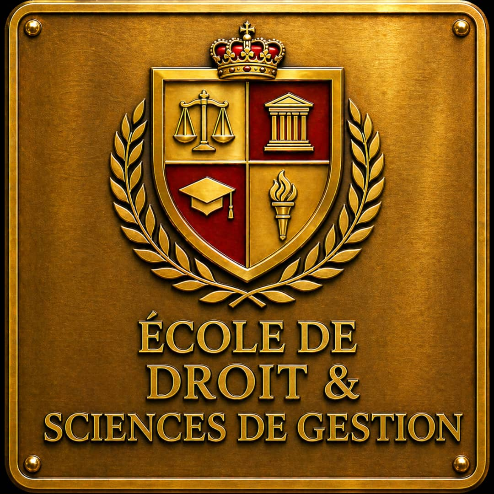
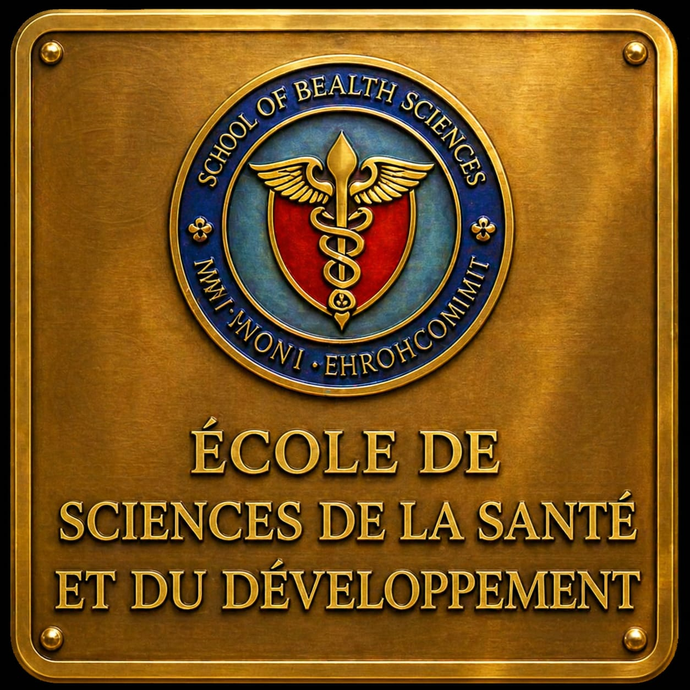

NOS ÉCOLES
Trouvez votre voie parmi nos écoles
Quatre domaines de formation, une même ambition pour votre réussite.

01 / ÉCOLE
Droit, sciences & gestion
Droit · Administration · Gestion · Finance
Voir les programmes →02 / ÉCOLE
Sciences, technologie & ingénierie
Informatique · Numérique · Ingénierie
Voir les programmes →
TROUVEZ VOTRE FORMATION
Explorez les programmes universitaires
Recherchez par école et par niveau. Contactez-nous pour confirmer les filières ouvertes.
POURQUOI CHOISIR SCIPT INTERNATIONAL ?
Un enseignement au service de votre avenir
Des écoles spécialisées, des parcours progressifs et un accompagnement pour vous aider à faire votre choix.
Parler à un conseiller →